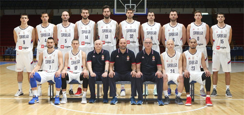

Naziv: KOŠARKAŠKI KLUB BASKET
Adresa: Sportska ulica bb
21400 Bačka Palanka
Email: office@kkbasket
KK Basket postoji od 1986. godine i od tada uspešno radi sa mlađim kategorijama, školama košarke i seniorskim timom.
Od samog osnivanja pa do danas klub je ostvario neverovatan sportski i organizacioni napredak i iz lokalnog karaktera, dobrim radom, upornošću i pre svega stručnim vođenjem i kreativnim idejama koje smo sproveli, došli smo do ovoga što smo danas – jedan od najuglednijih i najmasovnijih klubova u Bačkoj Palanci.
Iz našeg kluba poniklo je nekoliko vrhunskih igrača koji danas igraju u seniorskim timovima prestižnih klubova kod nas i u inostranstvu.
Seniorski tim prvaka u sezoni 2018/2019
Sajt uradila: Bojana Mihajlović